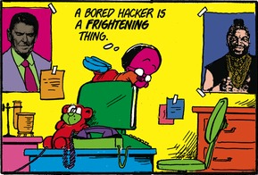

About Me
If you're looking at this page, then you got it from my resume or my email - but either way you should know my name :)
I like embedded systems, computer systems, and cybersecurity. Also aerospace.
I work in other places on other things.
Projects
Safe-LLVM | Expanding G-Free to work on 64-bit binaries
Tatum Robotics | Building a wearable using BLE on an STM32 to help deafblind people know when to open the door
Project Horizon | World's first terahertz-band space communication test platform